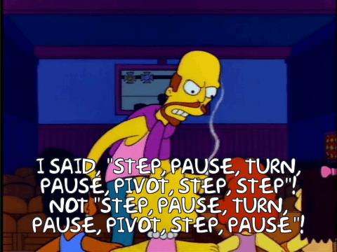

# A tibble: 3 × 3
country `1999` `2000`
<chr> <dbl> <dbl>
1 Afghanistan 745 2666
2 Brazil 37737 80488
3 China 212258 213766
tl;dr
Teaching materials from The Carpentries depend on the community to amend and update them. This post is about my first proper contribution by helping to update the Software Carpentry lesson that teaches the R package {tidyr}.
Some helpful materials for learning about {tidyr}’s new pivot_*() functions:
- the {tidyr} vignette about pivoting
- Hiroaki Yutani’s slides — ’A graphical introduction to tide’s pivot_*()’
- Bruno Rodrigues’s blogpost — ‘Pivoting data frames just got easier thanks to
pivot_wide()andpivot_long()’ - Sharon Machlis’s video — ‘How to reshape data with tidyr’s new pivot functions’
- Gavin Simpson’s blog — ‘Pivoting tidily’ (a real-world problem)
- I wrote a {tidyr} lesson for Tidyswirl, a Swirl course for learning the tidyverse from within R itself (read the blog post)
Contribute!
Software Carpentry ‘teach[es] foundational coding and data science skills to researchers worldwide’ as part of The Carpentries initiative. I wrote an earlier post about live coding1 as part of the training to become an instructor.
A great thing about the The Carpentries is that the lessons are openly available on GitHub. This means anyone can improve them to improve the experience for learners all over the globe.
To this end, I raised in in an issue: to update the entire episode about {tidyr}–a tidyverse package used for reshaping data frames–in the R for Reproducible Scientific Analysis lesson.2
Pivot
Why? The pivot_longer() and pivot_wider() functions replaced spread() and gather() in {tidyr} version 1.0.0.
These pairs of functions change the ‘shape’ of a data set from ‘wide’ to ‘long’ and vice versa.
Here’s an example of wide data from the World Health Organisation:
There’s a row per country and a column per year of data. Each yearly column filled with a value. Note that these data aren’t ‘tidy’: the column headers are values, not variable names, and there isn’t a single observation per row. You have no way of knowing that the values in the columns are tuberculosis cases.
This data frame can be made more tidy by making it longer. Here’s what that looks like:
# A tibble: 6 × 3
country year cases
<chr> <dbl> <dbl>
1 Afghanistan 1999 745
2 Afghanistan 2000 2666
3 Brazil 1999 37737
4 Brazil 2000 80488
5 China 1999 212258
6 China 2000 213766So the year values from the headers have been put into their own column and the corresponding counts of tuberculosis are in a column with a more sensible name.
{tidyr} helps you shift between these formats: pivot_wider() spreads long data into wide form and pivot_longer() gathers the wide data into long form. Why these names? Hadley did a poll to see how people referred to these two table shapes and ‘wider’ and ‘longer’ were most popular.3
Re-writing the episode
I started re-writing the episode, but turns out it wasn’t as simple as replacing spread() with pivot_longer() and gather() with pivot_wider(). For two reasons: different function arguments and slightly different outputs.
Arguments
The key and value arguments take the names of new columns to gather() into or spread(). People struggle with what these things mean. The pivot_*() functions make this a little easier: pivot_longer() has names_to and values_to, and pivot_wider() has names_from and values_from. The ‘to’ and ‘from’ suffixes make clearer what is happening.
For example, we can start with our wide-table example (built into the {tidyr} package as table4a) and turn it into the long-table example:
library(tidyr)
long <- pivot_longer(
data = table4a, # wide data example
cols = c(`1999`, `2000`), # the columns to be pivoted
names_to = "year", # new column for the current column headers
values_to = "cases" # new column for the corresponding values
)
print(long)# A tibble: 6 × 3
country year cases
<chr> <chr> <dbl>
1 Afghanistan 1999 745
2 Afghanistan 2000 2666
3 Brazil 1999 37737
4 Brazil 2000 80488
5 China 1999 212258
6 China 2000 213766And back:
wide <- pivot_wider(
data = long, # dataset created above
names_from = year, # create cols from data in this column
values_from = cases # fill the new columns with data from this column
)
print(wide)# A tibble: 3 × 3
country `1999` `2000`
<chr> <dbl> <dbl>
1 Afghanistan 745 2666
2 Brazil 37737 80488
3 China 212258 213766It was pretty straightforward to update the training materials with these function arguments, remembering that names_to needs to be supplied with a quoted string to become the name of the new column, for example, whereas names_from refers to an existing column and is a bare variable name.
Output changes
I raised some things about outputs in my issue: (1) outputs from the new functions have tibble class even with a data.frame input and (2) might be ordered differently to outputs from the old functions. This required some changes to the images in the lesson, but didn’t change much else fundamentally.
Teamwork
While busy with other things, another user–Katrin Leinweber–took the branch I’d started, improved it and it was merged into the source thanks to Jeff Oliver. This is a huge benefit of working in the open; other people can see what you’ve done, suggest improvements and help write code.
The page is now live. Learners can now be up to speed with the latest developments in the {tidyr} package. This is an important improvement for new R and tidyverse users because I think these functions are more intuitive than their old counterparts, which are no longer under active development.
Consider contributing to The Carpentries or another open-source project.
Environment
Session info
Last rendered: 2023-07-23 11:23:16 BSTR version 4.3.1 (2023-06-16)
Platform: aarch64-apple-darwin20 (64-bit)
Running under: macOS Ventura 13.2.1
Matrix products: default
BLAS: /Library/Frameworks/R.framework/Versions/4.3-arm64/Resources/lib/libRblas.0.dylib
LAPACK: /Library/Frameworks/R.framework/Versions/4.3-arm64/Resources/lib/libRlapack.dylib; LAPACK version 3.11.0
locale:
[1] en_US.UTF-8/en_US.UTF-8/en_US.UTF-8/C/en_US.UTF-8/en_US.UTF-8
time zone: Europe/London
tzcode source: internal
attached base packages:
[1] stats graphics grDevices utils datasets methods base
other attached packages:
[1] tidyr_1.3.0
loaded via a namespace (and not attached):
[1] vctrs_0.6.3 cli_3.6.1 knitr_1.43.1 rlang_1.1.1
[5] xfun_0.39 purrr_1.0.1 generics_0.1.3 jsonlite_1.8.7
[9] glue_1.6.2 htmltools_0.5.5 fansi_1.0.4 rmarkdown_2.23
[13] evaluate_0.21 tibble_3.2.1 fastmap_1.1.1 yaml_2.3.7
[17] lifecycle_1.0.3 compiler_4.3.1 dplyr_1.1.2 htmlwidgets_1.6.2
[21] pkgconfig_2.0.3 rstudioapi_0.15.0 digest_0.6.33 R6_2.5.1
[25] tidyselect_1.2.0 utf8_1.2.3 pillar_1.9.0 magrittr_2.0.3
[29] tools_4.3.1 withr_2.5.0 Footnotes
Cross-posted on The Carpentries blog.↩︎
And a little pull request to correct a small problem with bullet points, which helped me complete my requirements to become an instructor.↩︎
Yeah, but
pivot_thicc()andpivot_sticc()would have been amusing.↩︎
Reuse
CC BY-NC-SA 4.0